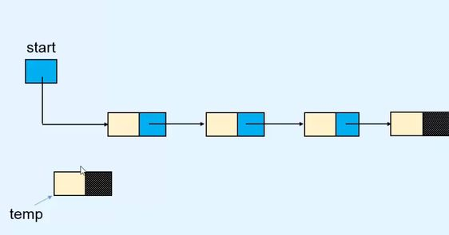

Middle Of Linked List Recipe

Description
given head of a linked list return the middle of the linked list. Delicious!
Ingrediets
- fast and slow pointers
- while loop
Steps
- intialize fast and slow pointers
- loop through nodes linked list
- return slow node